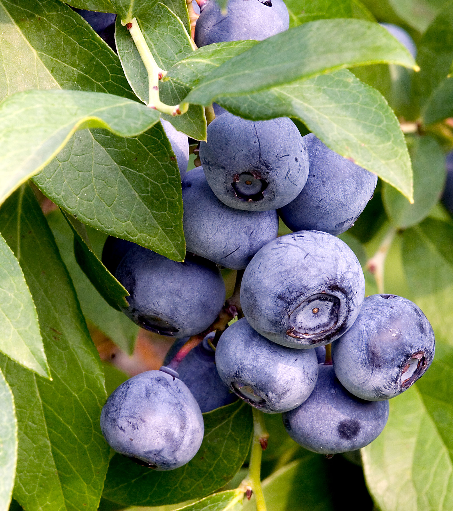
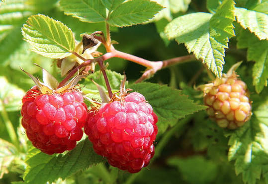
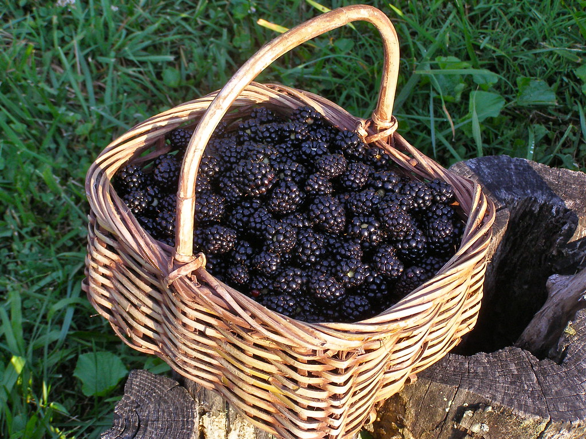

Popular Berry Fruits
Berry fruits are small, colorful, and packed with nutrients. They are naturally sweet and are enjoyed fresh, in smoothies, desserts, jams, and many other recipes. Most berries are rich in vitamins, fiber, and antioxidants, making them a healthy choice for people of all ages.
Blueberry

Blueberries are small, round berries that are blue to dark purple in color. They are rich in antioxidants, fiber, and Vitamin C. Blueberries are often called a superfood because they help support heart health and brain function.
Origin
North America
Taste
Sweet with a slightly tangy flavor.
Health Benefits
- Rich in antioxidants
- Supports heart and brain health
- Good source of Vitamin C and fiber
Strawberry

Strawberries are bright red berries known for their sweet taste and juicy texture. They are enjoyed fresh, in desserts, smoothies, and fruit salads.
Origin
Europe and North America
Taste
Sweet and juicy.
Health Benefits
- Excellent source of Vitamin C
- Supports a healthy immune system
- Contains antioxidants that protect body cells
Raspberry

Raspberries are soft berries with a sweet and slightly tart flavor. They are commonly used in jams, cakes, smoothies, and many healthy desserts.
Origin
Europe and Asia
Taste
Sweet with a mild tart flavor.
Health Benefits
- High in dietary fiber
- Contains Vitamin C and manganese
- Supports healthy digestion
Blackberry

Blackberries are dark purple berries with a sweet and slightly tart taste. They are packed with vitamins, minerals, and antioxidants that help keep the body healthy.
Origin
Europe, Asia, and North America
Taste
Sweet with a slightly tart flavor.
Health Benefits
- Rich in Vitamin C and Vitamin K
- Supports healthy bones
- High in antioxidants and fiber